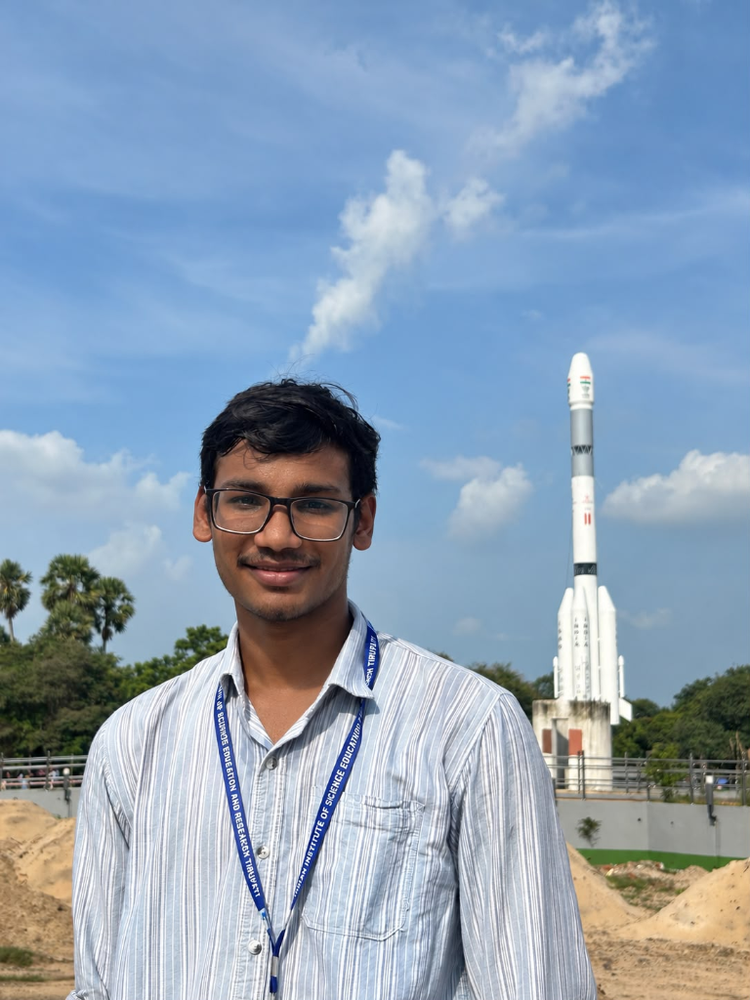
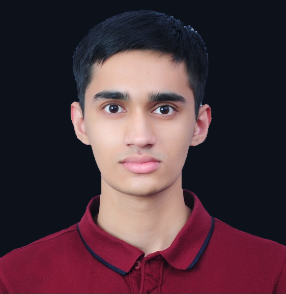
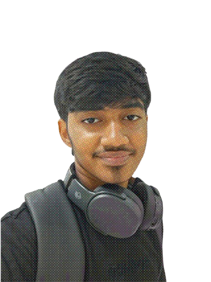

Milind Sahu
Founder
Founded Axiom Labs in 2025. Research fellow at IIT Palakkad on Gaussian process regression for distribution-valued inputs, and collaborator at the University of Amsterdam on renewable capture-price forecasting. Creator of Spectre and first author on both research papers.

Paarth Potnis
Chemistry lead, Spectre
Designs the SMARTS patterns that auto-label spectra, curates the infrared correlation table behind the rule engine, and checks model output against real functional-group assignments. Interested in organic synthesis, catalysis and enzyme-catalysed green chemistry.
Research Fellows
Joining the team for the Spectre project.
Vidharrthini Madhan
Research Fellow · Spectre
Upcoming intern at NIT Calicut. Research interest in computational chemistry, contributing to Spectre's chemistry pipeline for spectral interpretation and functional-group prediction.
Nuntluanga Chhangte
Research Fellow · Spectre
2nd year BS-MS student at IISER Tirupati. Working on computational chemistry and contributing to the Spectre project's scientific foundation.
Collaborators

Darun A.
Collaborator
Research assistant at the Madras School of Economics. Co-author on the Pan-IIM Conference-selected volatility paper and the NSRI Student Research Journal article on energy disaggregation. Builds market-risk and portfolio tools, and an NLP tracker that links news headlines to stock tickers.
Latheesh Roy
Co-author
Co-author on the arbitrage-free volatility paper.
History & Recognition
A record of milestones, awards, and publications since Axiom Labs was founded.
-
2025FoundedAxiom Labs established
Founded by Milind Sahu as an independent, student-run research group. Mission: start from axioms, not assumptions. Work on mathematical models of uncertainty and structure, and the software that makes them usable.
-
2025Top 1004,000+ TeamsCodeSynthesis National
Top 100 finish at CodeSynthesis, a national competition with over 4,000 teams.
-
2025Rank 51,000+ ParticipantsHack Beyond Limits
Ranked 5th out of over 1,000 participants at Hack Beyond Limits with EcoFusion — an optical sensor system for appliance-level energy monitoring.
-
2026Research FellowshipResearch Fellowship, IIT Palakkad
Research fellow at IIT Palakkad working on Gaussian process regression for distribution-valued inputs — the mathematical core of the volatility surface paper.
-
2026Research CollaborationCollaboration, University of Amsterdam
Collaborator on renewable energy capture-price forecasting, feeding directly into the energy systems research track.
-
20261st Prize1,500+ DevsNational Cloud Hackathon — Idea Phase
First place among over 1,500 participants in the idea phase of a national cloud computing hackathon.
-
20261st PrizeNIT Meghalaya National Hackathon
First place at the NIT Meghalaya national hackathon with the NILM signal disaggregation project — inferring appliance-level energy use from a single meter.
-
20261st PrizeINCI — Inter-IISER / IISc / NISER / CEBS Challenge
First place at the INCI inter-institutional challenge, competing against teams from IISER, IISc, NISER and CEBS campuses.
-
20262nd PrizeEco Champion Hackathon, IIT Hyderabad
Second place at IIT Hyderabad's Eco Champion Hackathon with TRACEWASTE — a chain-of-custody proof system that treats waste as a verifiable data trail.
-
2026Top 50900+ ParticipantsGoogle Prompt War
Ranked in the Top 50 out of 900+ participants in Google's Prompt War competition.
-
20264th Place500+ TeamsScalar School of Technology Launchpad
Fourth place at Scalar's Launchpad competition among over 500 teams.
-
Early 2026PreprintSelected · Pan-IIM ConferenceArbitrage-Free Gaussian Process Interpolation for Implied Volatility Surfaces
First research paper published. Embeds no-arbitrage constraints directly into the GP covariance structure so every interpolated surface already respects them. Selected for presentation at the Pan-IIM Conference. Co-authored with Darun A. and Latheesh Roy.
-
June 2026Journal ArticleAccepted · NSRI Student Research JournalFrom opt-in to infrastructure: NILM, energy conservation and the Civic Energy Disaggregation Mandate
Second paper accepted in the NSRI Student Research Journal. Proposes a policy framework — the Civic Energy Disaggregation Mandate — grounded in the NILM signal disaggregation work. Co-authored with Darun A.
-
20263rd PrizeInter-IISER Entrepreneurial Summit (IIES) 2026
Third place at IIES 2026 with the NILM energy disaggregation project, competing against entrepreneurial teams from IISER campuses across India.
-
2026FinalistFish Tank — COMET'26 with TIDES, IIT Roorkee
Finalist at COMET'26's Fish Tank event in collaboration with TIDES at IIT Roorkee.
-
2026FinalistE-Summit Anantya'26, NIT Raipur
Finalist at E-Summit Anantya'26 hosted by NIT Raipur.
-
2026Round 3IIT Kanpur EcoCraft Policy Conclave 2026
Advanced to Round 3 of IIT Kanpur's EcoCraft Policy Conclave with the energy systems and policy work.
-
2026 — OngoingActive ProjectSpectre — IR spectral interpretation engine
Open-source tool that reads a raw infrared spectrum and identifies functional groups. Rule engine built on SMARTS correlation tables works alongside a 1D CNN. Runs fully client-side with WebAssembly. NMR extension in research. Vidharrthini Madhan and Nuntluanga Chhangte join as Research Fellows.
Moments


Want to be on this page? See how to join.